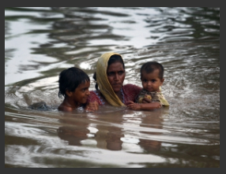

 Dubái. AFP Osama bin Laden exhortó a los musulmanes a ayudar a las víctimas de las inundaciones en Pakistán y se declaró preocupado por el cambio climático, en un mensaje sonoro puesto en línea hoy en foros islamistas, indicó el grupo de vigilancia SITE.
“El número de víctimas provocado por los cambios climáticos es muy grande (...), más importante que las víctimas de las guerras”, afirma la voz atribuida al dirigente de al-Qaeda, y cuya autenticidad no pudo ser verificada. Se trata de la primera grabación atribuida a Bin Laden desde el 25 de marzo. Contrariamente a sus anteriores mensajes, éste no tiene contenido político. La fecha de esta grabación se desconoce, pero el jefe de al-Qaeda felicita a los musulmanes con motivo del fin del mes de Ramadán, que acabó el 10 de septiembre.
“La catástrofe (en Pakistán) es muy grande y es difícil describirla. Lo que afrontamos (...) exige una acción rápida y seria de las almas caritativas y de los hombres valientes, para aportar ayuda a sus hermanos musulmanes de Pakistán”, dice.
Según la ONU, 21 millones de personas fueron damnificadas por las inundaciones que sufrió Pakistán, y de ellos 12 millones necesitan urgentemente ayuda. En la grabación, de 11 minutos y 39 segundos, titulada Reflexiones sobre las operaciones de socorro , Bin Laden propone la creación de un organismo de socorro islámico internacional.
“Proveer tiendas de campaña, alimentos y medicamentos es una obligación (...) pero los desastres (que sufren numerosos países musulmanes) son mucho más importantes que la ayuda propuesta y la acción no debe limitarse a las ayudas de urgencia sino que hay que organizar un grupo especial que tenga los conocimientos y la experiencia necesarios para enfrentar esos desafíos”, dice.
Bin Laden exhorta en la grabación a revisar las directivas de seguridad de las represas y de los puentes y a invertir en agricultura. “Invertir en agricultura requiere muchos esfuerzos y produce ganancias poco importantes. Hoy no se trata de una cuestión de ganancias o de pérdidas, sino de una cuestión de vida o muerte”, recalca.
En otra grabación difundida en enero, Bin Laden acusó a las naciones industrializadas de ser la causa del cambio climático. En la difundida el 25 de marzo, amenazó con matar a todos los norteamericanos capturados por su red si Jaled Cheij Mohamed, el organizador de los atentados del 11 de setiembre, y sus compañeros son ejecutados. La mayoría de los expertos en asuntos de al-Qaeda consideran que Osama bin Laden se esconde probablemente en una región montañosa entre Pakistán y Afganistán.